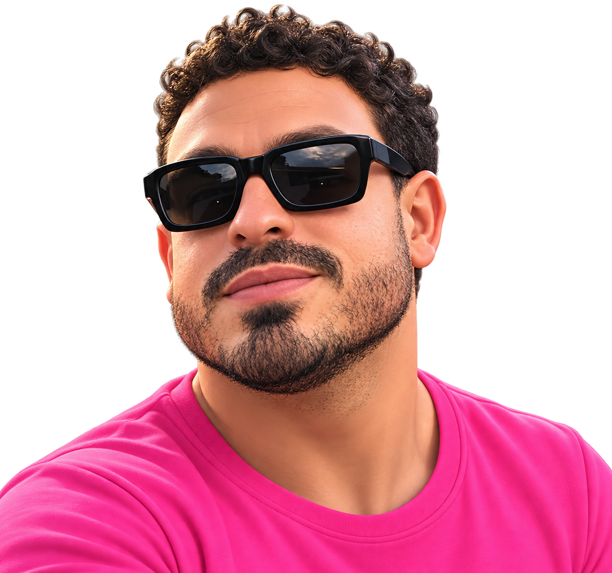
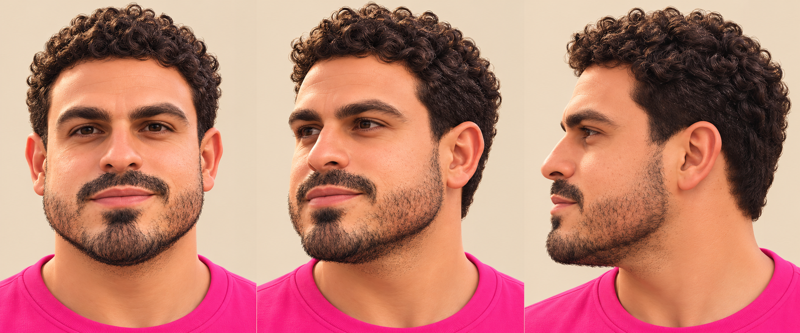

El voluntario. Desde todos los ángulos.
El retrato frontal aportado y la misma cabeza 3D usada en el juego, con luz neutra para revisar el parecido. La foto de perfil y la ambulancia adjuntas en la conversación se usaron como referencias de forma.

REFERENCIA FRONTAL APORTADA
MODELO / FRENTE
MODELO / TRES CUARTOS
MODELO / PERFIL
Hoja de referencia y textura generada
Generada a partir del retrato y la foto de perfil. Se utiliza como mapa de color sobre una malla facial con volumen; los anteojos y los rulos se construyen en 3D.
